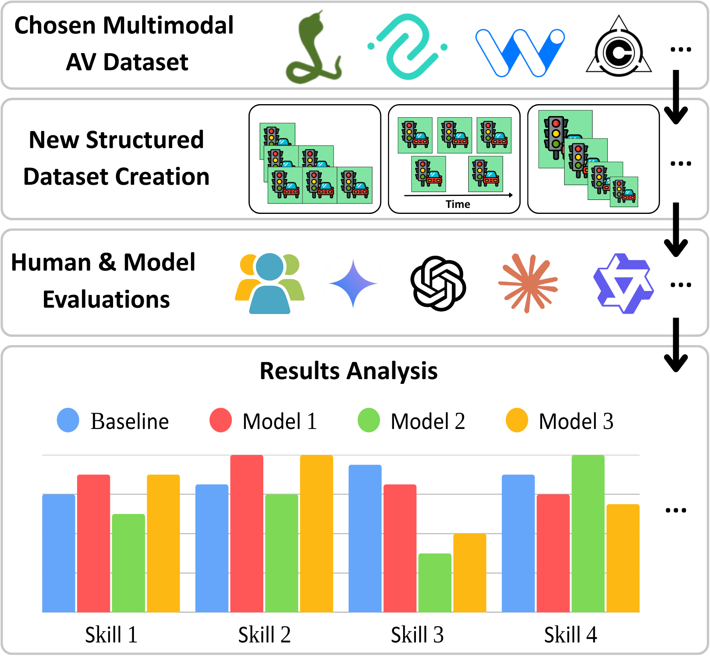
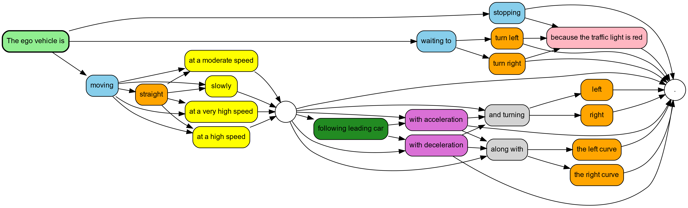
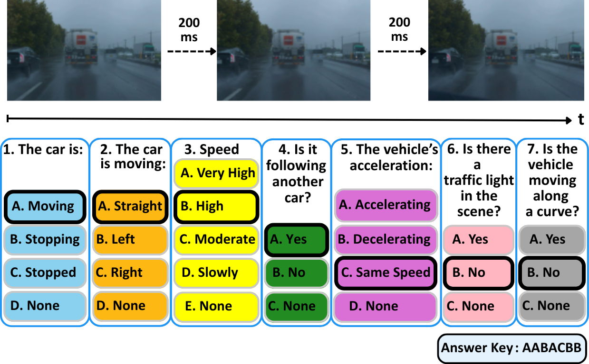
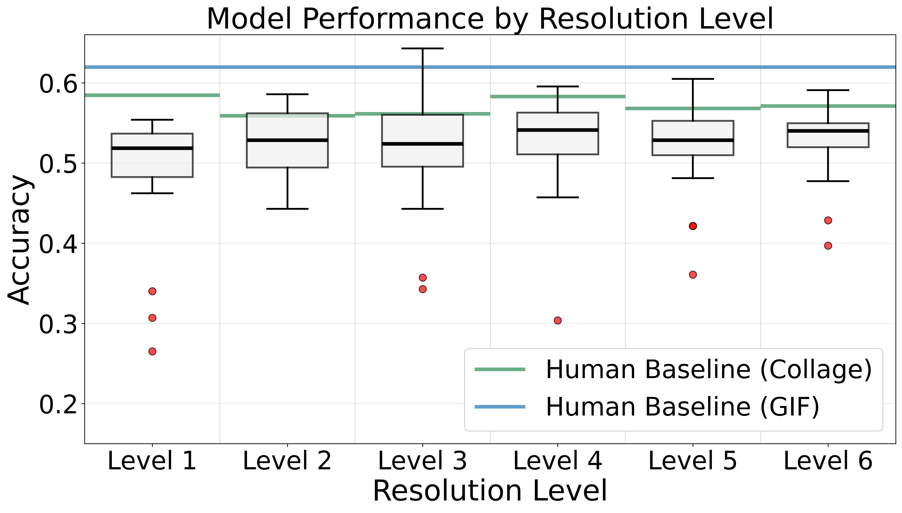
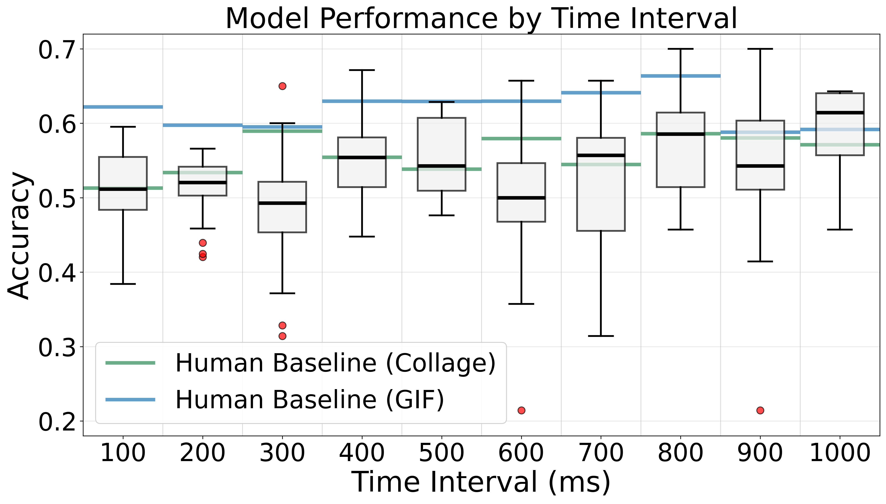
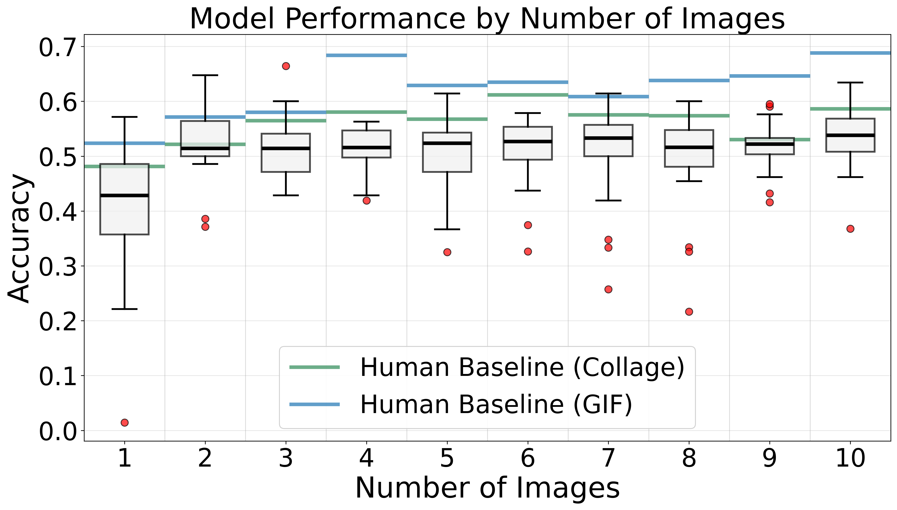
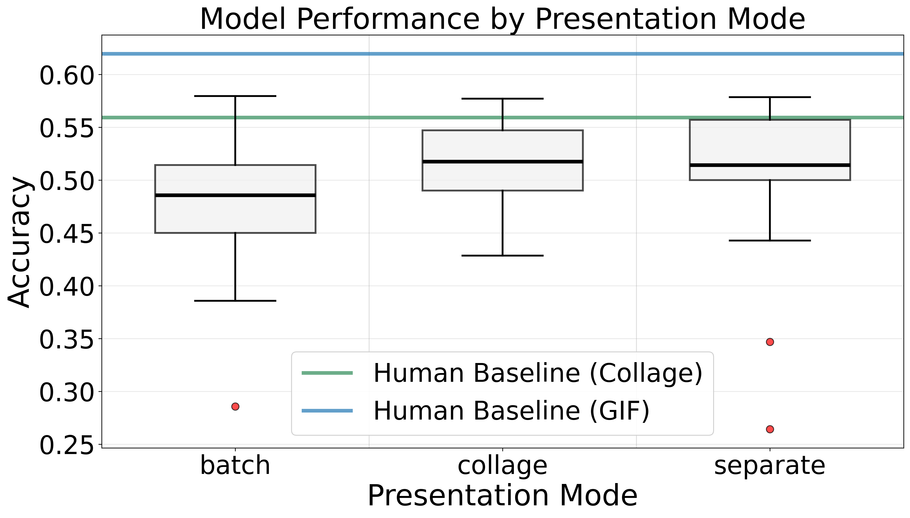
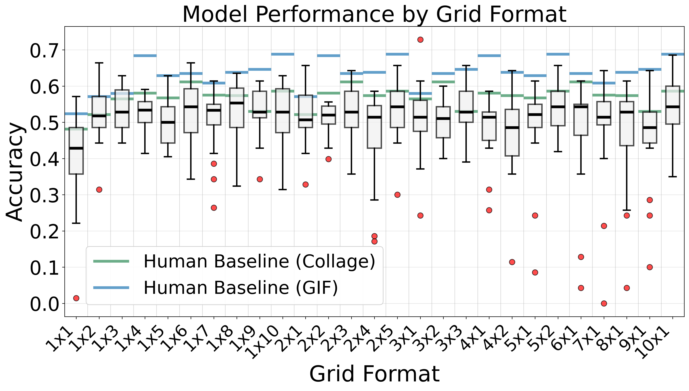

Vision-Language Models (VLMs) are increasingly proposed for autonomous driving tasks, yet their performance on sequential driving scenes remains poorly characterized, particularly regarding how input configurations affect their capabilities.
We introduce VENUSS, a framework for systematic sensitivity analysis of VLM performance on sequential driving scenes, establishing baselines for future research. Building upon existing datasets, VENUSS extracts temporal sequences from driving videos and generates structured evaluations across custom categories.
By comparing 25+ existing VLMs across 2,600+ scenarios, we reveal how even top models achieve only 57% accuracy, not matching human performance in similar constraints (65%) and exposing significant capability gaps. Our analysis shows that VLMs excel with static object detection but struggle with understanding the vehicle dynamics and temporal relations.
VENUSS offers the first systematic sensitivity analysis of VLMs focused on how input image configurations — resolution, frame count, temporal intervals, spatial layouts, and presentation modes — affect performance on sequential driving scenes.

VENUSS is designed to be dataset-agnostic. Categories are automatically extracted from each dataset's textual descriptions. We release VENUSS with configurations for four datasets:
Adding a new dataset requires modifying only 3 files: dataset configuration, annotation parser, and evaluation questions.


The annotation system transforms natural language descriptions into structured answer keys. For example:
Caption: "The ego vehicle is moving straight at a high speed"
+-------------------- Motion: Moving (A)
| +----------------- Direction: Straight (A)
| | +-------------- Speed: High speed (B)
| | | +----------- Following: Following (A)
| | | | +-------- Acceleration: Constant Speed (C)
| | | | | +----- Traffic Light: No traffic light (B)
| | | | | | +-- Curve: No curve (B)
| | | | | | |
Answer key: A A B A C B BModel family hierarchy (accuracy): Qwen (52.8%) > Gemini (51.2%) > Claude (50.5%) > GPT (49.4%). Qwen architectures demonstrate both superior accuracy and consistency (σ=0.032) compared to GPT models (σ=0.082), indicating 2.56× better reliability.
GPT-4o-Mini outperforms the flagship GPT-4o by 13 percentage points (55% vs 42%) due to GPT-4o's frequent refusals on driving-related content. Gemini-2.5-Pro was excluded entirely (90%+ refusal rate).
| Task | Difficulty | F1 Range |
|---|---|---|
| Vehicle Motion Detection | Easy | 0.73 – 0.91 |
| Traffic Light Detection | Moderate | 0.61 – 0.90 |
| Curved Road Detection | Moderate-Hard | 0.40 – 0.73 |
| Car Following Behavior | Hard | 0.29 – 0.64 |
| Vehicle Direction Analysis | Hard | 0.08 – 0.33 |
| Vehicle Speed Assessment | Very Hard | 0.12 – 0.32 |
| Vehicle Acceleration Detection | Hardest | 0.07 – 0.25 |
Our systematic evaluation across 270 unique configuration combinations reveals a 48.2% relative improvement potential through systematic configuration tuning.
720p (960×540) achieves 95% of peak performance while maintaining computational tractability. Lower resolutions lose critical visual details needed for scene interpretation, while higher resolutions add pixel density without new semantic information for these tasks.

Optimal performance at 1000ms intervals (0.5918 accuracy) versus 200ms intervals (0.5068 accuracy), a 14.4% accuracy penalty for shorter intervals. Longer intervals capture more visually distinct frames, making scene changes more apparent.

Increasing frames from 1 to 3-4 yields a 31.5% improvement, but performance plateaus beyond 4 frames. Current VLMs cannot effectively integrate information across long sequences, likely due to attention mechanisms that struggle to track temporal changes across many frames.

Spatial co-location allows models to compare frames simultaneously within a single image, rather than relying on context memory across separate inputs.

Horizontal layouts (3×1, 4×1) outperform square grids (p < 0.001, η² = 0.41). Left-to-right arrangement matches natural temporal flow and avoids ambiguity in reading order.

Select a model to highlight its performance trend across all five configuration dimensions. The connecting line reveals how each model responds to different settings.
The web application supports three presentation modes for human evaluators:
8 evaluators participated: 3 using collages, 5 using GIFs (108 evaluations each). GIF-based evaluations consistently outperformed collage-based (65% vs 56% peak accuracy, +16% relative improvement).
| Category | κ GIF (5 raters) | κ Collage (3 raters) |
|---|---|---|
| Motion | 0.595 (Moderate) | 0.465 (Moderate) |
| Direction | 0.815 (Almost perfect) | 0.763 (Substantial) |
| Speed | 0.672 (Substantial) | 0.516 (Moderate) |
| Following | 0.919 (Almost perfect) | 0.907 (Almost perfect) |
| Acceleration | 0.432 (Moderate) | 0.248 (Fair) |
| Traffic Light | 0.819 (Almost perfect) | 0.788 (Substantial) |
| Curve | 0.639 (Substantial) | 0.585 (Moderate) |
| Overall Mean | 0.699 (Substantial) | 0.610 (Substantial) |
Both evaluation modes show substantial agreement. GIF consistently outperforms collage (κ +0.05–0.18 per category). Categories dependent on temporal cues (speed, motion, acceleration) show the largest improvement from collage to GIF, while spatially-grounded categories (following, traffic light) remain stable.
The following sections present the complete prompt templates used for VLM evaluation in VENUSS. These could not be included in the main paper due to space constraints.
System Message
You are an expert in autonomous driving scenario analysis. You will be shown images
representing sequential driving scenarios and must classify them according to specific
categories.The user prompt provides context about the image content and task requirements. For each evaluation, models receive:
User Message
You are viewing a [rows]x[cols] grid of images showing a driving scenario captured
at [interval] ms intervals. The images are arranged chronologically from left to
right, top to bottom. These images are from the ego vehicle's perspective in a
driving scenario.
Based on the sequential images, please answer the following questions:
1. Motion State: Is the ego vehicle moving, stopping, or stopped?
Options: (A) Moving (B) Stopping (C) Stopped
2. Direction: What direction is the ego vehicle moving?
Options: (A) Straight (B) Left (C) Right
3. Speed: What is the ego vehicle's speed?
Options: (A) Very High (B) High (C) Medium (D) Low
4. Following: Is the ego vehicle following another vehicle?
Options: (A) Not following (B) Following
5. Acceleration: What is the ego vehicle's acceleration state?
Options: (A) Positive acceleration (B) Negative acceleration (C) No acceleration
6. Traffic Light: Is there a traffic light visible?
Options: (A) Red (B) No traffic light (C) Green (D) Yellow
7. Curve: Is the ego vehicle on a curved road?
Options: (A) Curved road (B) Straight road
Please provide your analysis and then include a short answer key at the end
in the format: 1) [letter] 2) [letter] ... 7) [letter]Note: Models generate free-form responses and are free to express themselves. The answer key at the end is parsed for evaluation, enabling reproducible and scalable assessment across 25+ models and 2,600+ scenarios.
Honda Scenes uses 16 environmental categories instead of CoVLA's 7 behavioral categories, covering road type, weather, surface conditions, ambient lighting, and various infrastructure elements.
User Message
You are viewing a [rows]x[cols] grid of images showing a driving scenario captured
at [interval] ms intervals. The images are arranged chronologically from left to
right, top to bottom. These images are from the ego vehicle's perspective in a
driving scenario.
Based on the sequential images, please answer the following questions about the
driving environment:
1. Road Type: What type of road environment is this?
Options: (A) Local (B) Highway (C) Ramp (D) Urban (E) Rural (F) NDA
2. Weather: What are the current weather conditions?
Options: (A) Sunny (B) Cloudy (C) Rain (D) Snow (E) Fog (F) Hail (G) NDA
3. Road Surface: What is the road surface condition?
Options: (A) Dry (B) Wet (C) Icy (D) Snow (E) NDA
4. Ambient Lighting: What is the lighting/time of day?
Options: (A) Day (B) Dawn/Dusk (C) Night (D) NDA
5. Intersection: Is there an intersection present in this scene?
Options: (A) Yes, 3-way (B) Yes, 4-way (C) Yes, 5+ way (D) No intersection (E) NDA
6. Traffic Control: What type of traffic control exists at the intersection (if present)?
Options: (A) Traffic lights (B) Stop sign (C) No signal (D) No intersection (E) NDA
7. Merge/Branch: Is there a merge or branch scenario visible?
Options: (A) Merge - gore on left (B) Merge - gore on right
(C) Branch - gore on left (D) Branch - gore on right
(E) No merge/branch (F) NDA
8. Bridge/Overpass: Is there a bridge or overpass in this scene?
Options: (A) Yes - overhead bridge (B) Yes - under overpass (C) No (D) NDA
9. Railway Crossing: Is there a railway crossing visible?
Options: (A) Yes (B) No (C) NDA
10. Tunnel: Is there a tunnel in this scene?
Options: (A) Yes (B) No (C) NDA
11. Construction Zone: Is there a construction zone visible?
Options: (A) Yes (B) No (C) NDA
12. Zebra Crossing: Is there a zebra crossing (marked pedestrian crossing) visible?
Options: (A) Yes (B) No (C) NDA
13. Regular Crosswalk: Is there a regular crosswalk visible?
Options: (A) Yes (B) No (C) NDA
14. Driveway: Is there a driveway entrance/exit visible?
Options: (A) Yes (B) No (C) NDA
15. Primary Scenario: What is the primary road scenario in this scene?
Options: (A) Intersection (B) Merge/Branch (C) Railway crossing
(D) Tunnel (E) Bridge/Overpass (F) Construction zone
(G) Zebra crossing (H) Regular road (I) NDA
16. Vehicle Position: What is the vehicle's position relative to the primary scenario?
Options: (A) Approaching (B) Entering/At (C) Passing/Exiting
(D) No special scenario (E) NDA
Please provide your analysis and then include a short answer key at the end
in the format: 1) [letter] 2) [letter] ... 16) [letter]Note: NDA = No Definite Answer, selected when the category cannot be determined from the available visual information.
Complete performance evaluation for all VLMs and human evaluators. Values are averaged over all tested configurations.
| Model / Human | Acc. | Prec. | Rec. | F1 | Mot. | Dir. | Spd. | Fol. | Accel. | TL | Crv. | Time (s) |
|---|---|---|---|---|---|---|---|---|---|---|---|---|
| evaluator-1 (collage) | 0.63 | 0.66 | 0.63 | 0.64 | 0.88 | 0.56 | 0.32 | 0.62 | 0.40 | 0.89 | 0.69 | N/A |
| evaluator-2 (collage) | 0.57 | 0.61 | 0.57 | 0.58 | 0.87 | 0.50 | 0.41 | 0.64 | 0.37 | 0.76 | 0.40 | N/A |
| evaluator-3 (collage) | 0.54 | 0.59 | 0.54 | 0.55 | 0.82 | 0.27 | 0.22 | 0.60 | 0.27 | 0.76 | 0.68 | N/A |
| evaluator-4 (gif) | 0.65 | 0.68 | 0.65 | 0.66 | 0.92 | 0.42 | 0.49 | 0.80 | 0.27 | 0.85 | 0.74 | N/A |
| evaluator-5 (gif) | 0.63 | 0.66 | 0.63 | 0.64 | 0.88 | 0.56 | 0.32 | 0.62 | 0.40 | 0.89 | 0.69 | N/A |
| evaluator-6 (gif) | 0.63 | 0.66 | 0.63 | 0.64 | 0.93 | 0.58 | 0.37 | 0.75 | 0.30 | 0.79 | 0.72 | N/A |
| evaluator-7 (gif) | 0.63 | 0.66 | 0.63 | 0.63 | 0.91 | 0.51 | 0.45 | 0.72 | 0.32 | 0.83 | 0.70 | N/A |
| evaluator-8 (gif) | 0.62 | 0.64 | 0.62 | 0.62 | 0.91 | 0.54 | 0.42 | 0.72 | 0.31 | 0.84 | 0.62 | N/A |
| qwen-vl-max | 0.57 | 0.62 | 0.57 | 0.59 | 0.90 | 0.14 | 0.31 | 0.60 | 0.12 | 0.88 | 0.68 | 2.4 |
| claude-3.7-sonnet | 0.55 | 0.60 | 0.55 | 0.57 | 0.88 | 0.17 | 0.20 | 0.59 | 0.10 | 0.89 | 0.64 | 2.8 |
| claude-3.5-sonnet | 0.55 | 0.60 | 0.55 | 0.57 | 0.88 | 0.19 | 0.17 | 0.60 | 0.09 | 0.90 | 0.66 | 2.6 |
| gpt-4o-mini | 0.55 | 0.60 | 0.55 | 0.56 | 0.85 | 0.22 | 0.15 | 0.63 | 0.25 | 0.87 | 0.68 | 3.0 |
| qwen-vl-plus | 0.54 | 0.61 | 0.54 | 0.56 | 0.85 | 0.33 | 0.12 | 0.48 | 0.08 | 0.90 | 0.63 | 1.6 |
| gemini-1.5-flash | 0.54 | 0.60 | 0.54 | 0.56 | 0.87 | 0.22 | 0.14 | 0.45 | 0.11 | 0.88 | 0.71 | 2.6 |
| qwen2.5-vl-7b | 0.54 | 0.62 | 0.54 | 0.56 | 0.82 | 0.28 | 0.15 | 0.47 | 0.09 | 0.88 | 0.64 | 2.2 |
| claude-3-opus | 0.54 | 0.59 | 0.54 | 0.55 | 0.91 | 0.08 | 0.21 | 0.57 | 0.08 | 0.90 | 0.50 | 4.1 |
| qwen2.5-vl-72b | 0.52 | 0.59 | 0.52 | 0.55 | 0.88 | 0.17 | 0.23 | 0.59 | 0.10 | 0.77 | 0.67 | 3.7 |
| gemini-2.0-flash-lite | 0.53 | 0.59 | 0.53 | 0.54 | 0.81 | 0.26 | 0.17 | 0.57 | 0.15 | 0.84 | 0.65 | 2.8 |
| claude-opus-4 | 0.52 | 0.59 | 0.52 | 0.54 | 0.84 | 0.15 | 0.19 | 0.52 | 0.09 | 0.89 | 0.60 | 7.1 |
| gemini-2.0-flash-exp | 0.51 | 0.61 | 0.51 | 0.53 | 0.88 | 0.26 | 0.13 | 0.60 | 0.12 | 0.72 | 0.68 | 4.3 |
| gemini-1.5-pro | 0.50 | 0.60 | 0.50 | 0.53 | 0.83 | 0.17 | 0.16 | 0.56 | 0.14 | 0.84 | 0.65 | 4.1 |
| claude-sonnet-4 | 0.51 | 0.55 | 0.51 | 0.53 | 0.85 | 0.11 | 0.15 | 0.52 | 0.08 | 0.88 | 0.59 | 6.1 |
| gemini-2.0-flash | 0.49 | 0.61 | 0.49 | 0.51 | 0.88 | 0.25 | 0.13 | 0.59 | 0.13 | 0.62 | 0.68 | 2.8 |
| qwen2.5-vl-32b | 0.48 | 0.58 | 0.48 | 0.51 | 0.82 | 0.29 | 0.32 | 0.45 | 0.11 | 0.80 | 0.61 | 4.4 |
| qwen2.5-vl-3b | 0.51 | 0.54 | 0.51 | 0.51 | 0.87 | 0.21 | 0.16 | 0.29 | 0.07 | 0.90 | 0.53 | 1.9 |
| gemini-1.5-flash-8b | 0.46 | 0.58 | 0.46 | 0.50 | 0.85 | 0.14 | 0.13 | 0.51 | 0.16 | 0.61 | 0.73 | 2.5 |
| claude-3-sonnet | 0.45 | 0.53 | 0.45 | 0.48 | 0.73 | 0.11 | 0.13 | 0.38 | 0.08 | 0.80 | 0.59 | 2.6 |
| gpt-4o | 0.42 | 0.60 | 0.42 | 0.47 | 0.73 | 0.14 | 0.12 | 0.54 | 0.08 | 0.75 | 0.63 | 3.0 |
| claude-3.5-haiku | 0.42 | 0.55 | 0.42 | 0.46 | 0.78 | 0.15 | 0.20 | 0.49 | 0.10 | 0.77 | 0.59 | 3.1 |
Bold = best among VLMs, underline = second best. Green rows = collage human evaluators, blue rows = GIF human evaluators.
If you find this work useful, please cite: